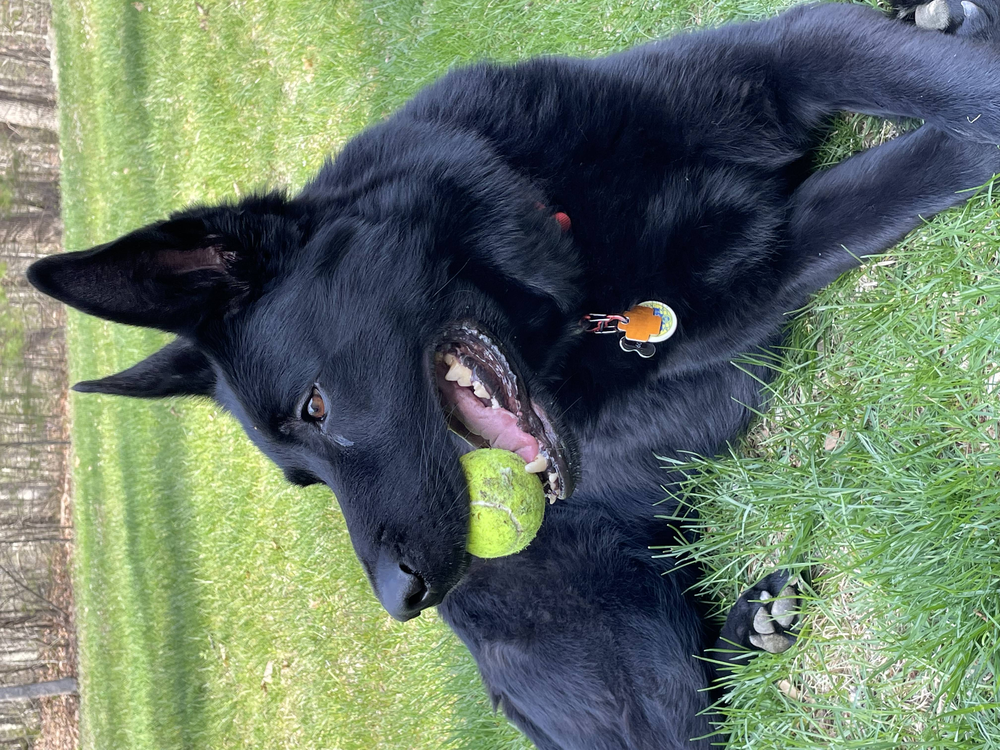
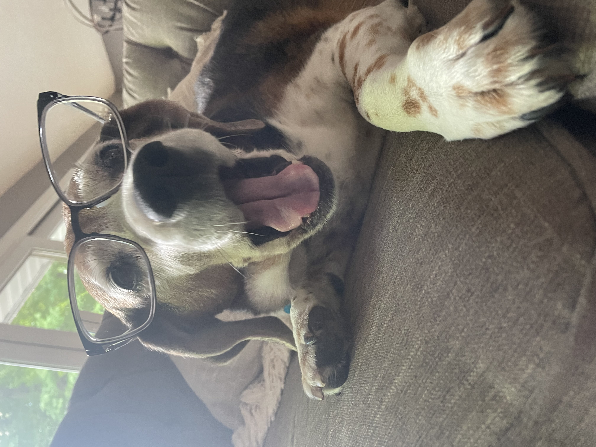

Pets
Nico

Nico is a 5 year old male cat who is shy around strangers but loves his family. He is a lazy cat who loves louging around all day but at the sound of people, he'll disappear to one of this many hiding spots.
Nico loves food. Although he is skinner than his other cat siblings, when food is placed out he'll eat his portion and his siblings. Nico loves treats and even though he is shy, he'll come running out for treats.
Photo Gallery


Likes
- Snacks
- Yellow toys
- Hiding
Jax

Jax is a kitten, about five months old that I found this summer at a gas station while traveling to Marquette, Michigan. He was scared and malnourished, crying in the parking lot. I took him with me and after some healthy meals and a trip to the vet he is doing great!
My roommates and I just recently moved and Jax has been having a hard time getting used to the large house since we were previously living in a small apartment. Jax is incredibly playful and loves to run around, but when he is sleepy he is happy to be held.
Photo Gallery


Likes
- Toys
- Going outside
- Attention
Basil

Basil, otherwise known as Slaysil, is a very energetic white, slightly crusty and trusty, dog (bichon). She gets princess treatment in her household, but also out in public. As a consequence, she is very clingy and loves to lick, especially in the face.
She endeavors in multiple hobbies and activities, which include flying, licking, standing on two legs, ringing bells, and jumping through hula hoops.
Photo Gallery


Likes
- Water bottles
- Socks
- Cats
Luna

Luna is a German shepherd mix and a fireball of energy. Oftentimes, destroying anything in her path she will take and hide all your socks, shoes, and clothes for her to chew on. She loves playing catch at the park, it always gives her the zoomies.
Luna is a very jealous, loving, and protective dog. She really embraces her inner chihuahua and will bark at any stranger, car, or noise at night. She makes the perfect guard dog. But she is not at all aggressive. Luna is all bark no bite!
Photo Gallery


Likes
- Chicken
- Going to the park
- Belly rubs
York
York loves to stay active and go on long walks by his house. He also enjoys chewing on his large assortment of toys. His favorite toy is his squeaky pig. York’s favorite food is sausage, but cheese is another favorite.
York is a very sociable dog and is a licensed therapy dog. He frequently visits nursing homes and other places in an attempt to raise peoples’ spirits. When it comes to bedtime, York prefers to sleep alone in his favorite blue dog bed. He will always be the first to get up in the morning.
Photo Gallery


Likes
- Food
- Playing
- Toys
Bear

Bear is a lazy, food-loving dog that is sometimes playful. His favorite activity is lying in the sun on his side and lounging. He enjoys playing with his toys and loves to fetch them when you throw them, but eventually, he gets bored and just stops fetching them and lays down.
Bear is also scared of a lot of things. He does not like water (showers and even rain) or getting his nails clipped, and he is sometimes even so lazy that he will just stop walking and sit down until you turn around and go back home.
Photo Gallery


Likes
- Food
- Laying in bed
- Fetch
Sofie
Sofie is a 15-year-old Beagle mix. Her favorite spot in the house is the living room couch. She loves to go outside, sometimes too much, leaving us to open the door for her constantly. Sofie loves freshly cut grass, she rolls around in it for hours after it gets cut.
Sofie is very old, she joined our family when I was still in a car seat. Sofie loves the weekends because she gets her favorite treat, a fried egg. Sofie loves long walks around the lake or on the trail, where she can be let free to run to her hearts content.
Photo Gallery


Likes
- Fried Eggs
- Peanut Butter
- Bacon Strips